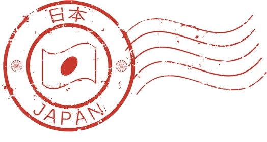

2026-09-19 · Japanese Pronunciation
Japanese Pronunciation にほんごの はつおん
Pre-Lesson A — Japanese has far fewer sounds than English. Mastery starts with the five basic vowels: a (father), i (see), u (zoo), e (men), o (boat). Most sounds are consistent, making it easier for English speakers to learn natural pronunciation.
-
HiraganaPronunciationakaEnglishred
-
HiraganaPronunciationinochiEnglishlife
-
HiraganaPronunciationumaEnglishhorse
-
HiraganaPronunciationebiEnglishshrimp
-
HiraganaPronunciationotokoEnglishman

19-09-2026 17:41G Fonts Japanese types